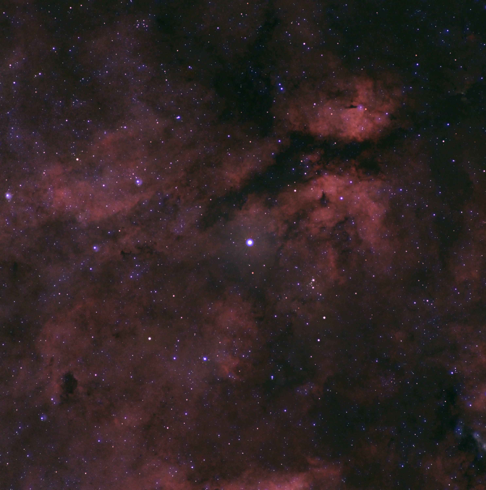
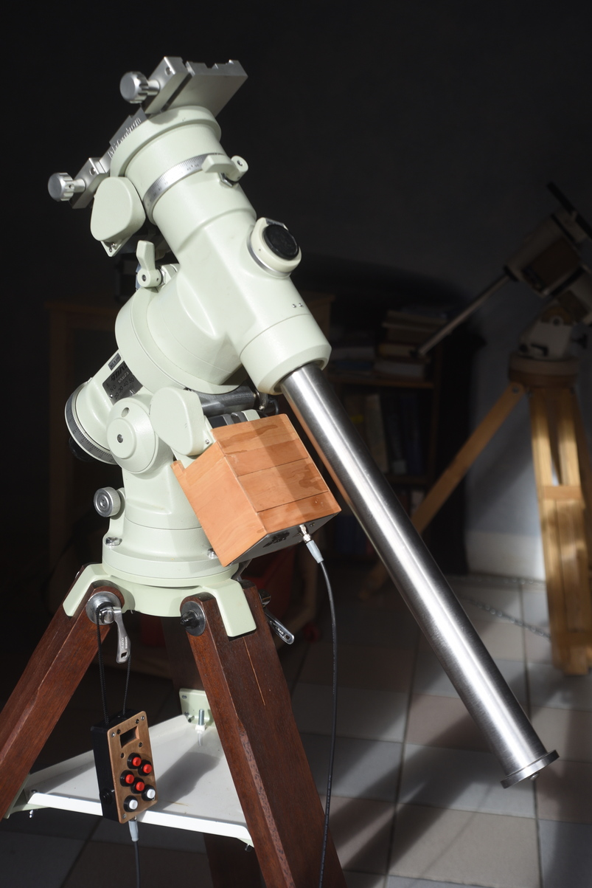
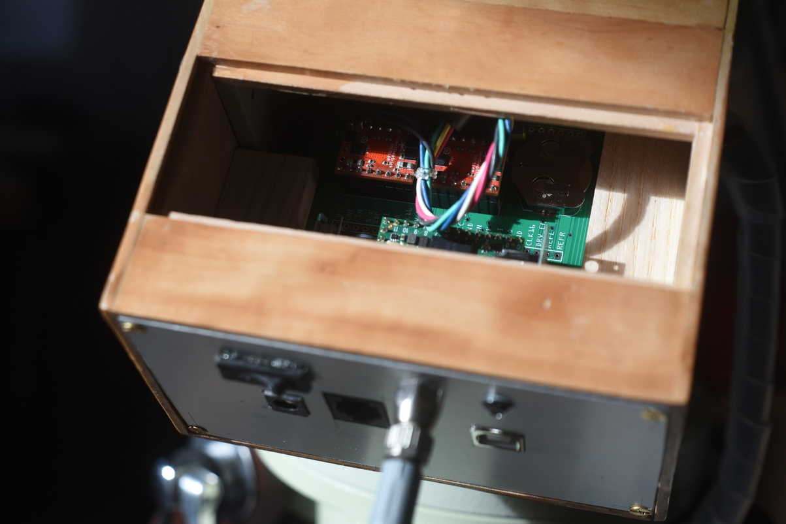
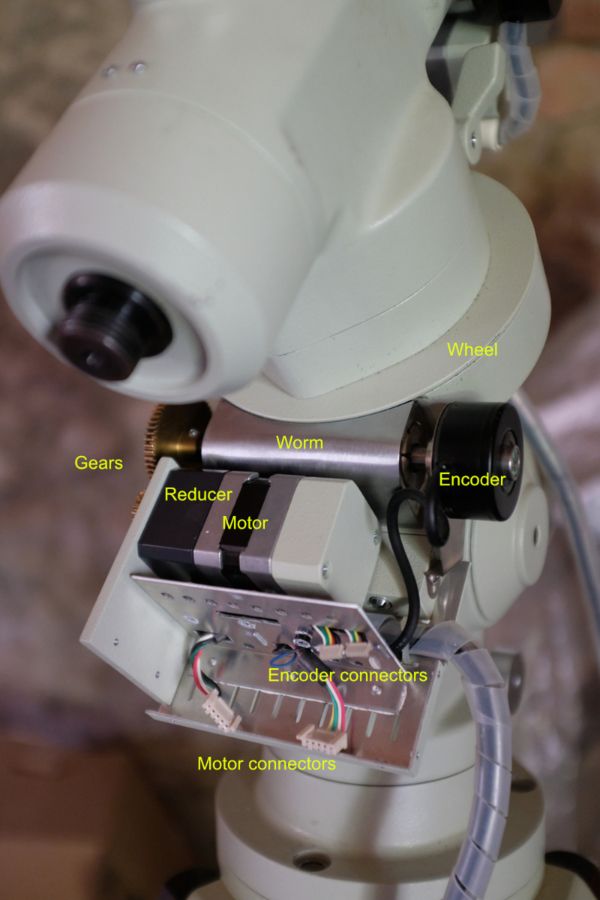
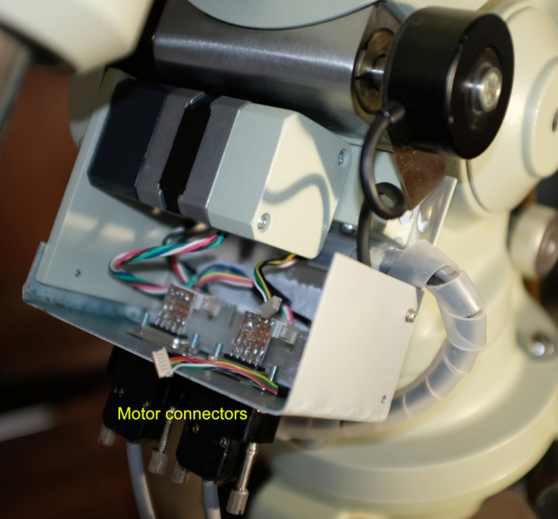

Sadr Region
2024, Jul 29

Sadr Region: H II region in the constellation Cygnus
Nikkor 180mm@F4, ASI533MC, 42x300sec
UV/IR Filter
Mount: Astro-Physics 600 with TeenAstro
PixInsight, Starnet2
Capture date: 27/28 Jul 2024
NGC 2244
2024, Jul 3

NGC 2244: Rosette Nebula
Borg 90FL@F4, ASI533MC, 48x300sec
UV/IR Filter
Mount: Astro-Physics 600 with TeenAstro
PixInsight, Starnet2
Capture date: 14 Feb 2024
Compare with same object captured and processed in 2020.
Takahashi NJP (Integrated TeenAstro)
2024, Mar 10
I finished adapting a TeenAstro Main Unit version 2.5.4 to the NJP mount, with a custom wooden box.
 
Takahashi NJP
2023, Oct 28
The NJP Temma2 is a wonderful mount, with antique electronics. This shows how to upgrade it with a modern TeenAstro controller in a reversible way, without modifying any of the connectors. The original Temma2 electronics box is removed and replaced by a custom box.

It has a classical gear arrangement. Both RA and DEC axes have the same motor (NEMA17, 200 steps/rev), reducer (18:1) and gears (60:24). The RA axis wheel has 240 teeth, and the DEC has 144 teeth. The resulting gear ratios are:
RA: 18 x 2.5 x 240 = 10800
DEC: 18 x 2.5 x 144 = 6480
The encoders on the worm are ABN type with 300 pulses/rev. At sidereal speed, on the RA axis, we get one A/B pulse every 0.8333 second and one N pulse every 250 seconds.
At this time, I use a temporary aluminium plate with an external TeenAstro. Eventually it will be replaced by a small TeenAstro board attached to the mount.
I made simple 4-wire adapters to plug the motors. The Temma2 has Rose connectors that are mechanically very close to similar Molex models.
The encoders connectors have 6 pins at 1.27mm pitch. It is difficult, but possible to make an adapter to the easier 2.54mm pitch. However I have not yet figured out how Takahashi uses them. Of course they are not absolute, so they cannot be used like modern 10-Micron or Astrophysics mounts, but they might be used to improve tracking (more on this later).

The mount works fine. The original Temma2 electronics are rated to 350x. I set the maximum slewing speed to 420x, with 16 microsteps (no need to use a bigger value with such a high gear). In Motion Controller mode (SPI only), it would be possible to run faster, but this would push the motors way beyond their rated maximum speed.
Archive
- Sadr Region
- NGC 2244
- Takahashi NJP (Integrated TeenAstro)
- Takahashi NJP
- M31
- Lunar Eclipse - 16 may 2022
- Leo Triplet
- Bode's Galaxies
- Markarian's Chain
- M45
- NGC 7822
- Cold morning
- Heart Nebula
- NGC 6992 - Eastern Veil Nebula
- M33
- M16
- NGC 7635
- Dew Heater Controller
- IC 5146
- Reinforced pier for Telescope
- Summer Milky Way
- Box for TeenAstro mount controller
- NGC4565
- Morning Planets
- Wooden pier for Telescope
- NGC 2244 - Rosette Nebula
- Moonlight over Obiou
- Astro-Physics AP600 mount